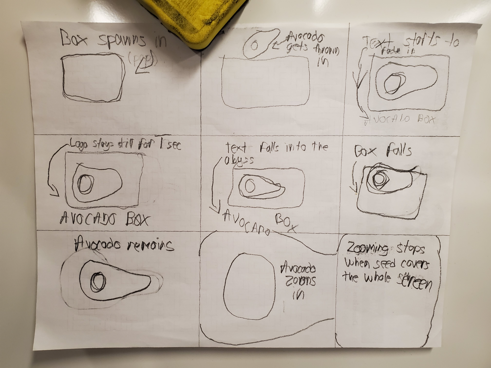

Avocado Box Logo Animation
The process behind the animation
This project was kind of easy, I used basic transformation filters such as the Move, Rotation and Scaling filters, I also used a Time warp filter on the box and the Avocado near the end of the animation, I also had utilized a Blur feature but for some reason it didn't save. Nonetheless I'm happy with what I've accomplished by using very little features that After Effects had to offer. If I were to go back to amend my work I would reimplement the blur feature.
Very little had changed from my original storyboard sketches, The idea was clear, and I knew exactly what to do. The only thing I changed from it was adding an Orange background that faded into Grey, the reason why I did this is because I wanted it to loop so after the Avocado zoomed into the seed, it would circle back to the orange background.
After we had that review where we looked at other classmate's work, I've added a sizzle animation to the box and avocado before they left the frame, The blur feature for when the box and text are falling out of frame was also added even though no one suggested it, I did implement it because another animation I saw had implemented it in a nice way but in the end the .aep file didn't save properly and the blur is nowhere to be seen.
Storyboard Sketches and Backstory
My main inspiration for this animation is the Netflix Logo Introduction when you first start to watch a series/movie, I always liked how the N would zoom in near the end of the intro and thus I've replicated it here. However, I decided not to copy it 1:1 and I've added my own twist at the start where the Box either pops in or fades into the view. Then the Avocado would be thrown in with the Text starting to appear. Once a second has passed the Box and Text would fall into the abyss and, it ends with the aforementioned Avocado zooming into the seed. It seems simple but I would bet all my teeth that it's complicated to do the zoom in